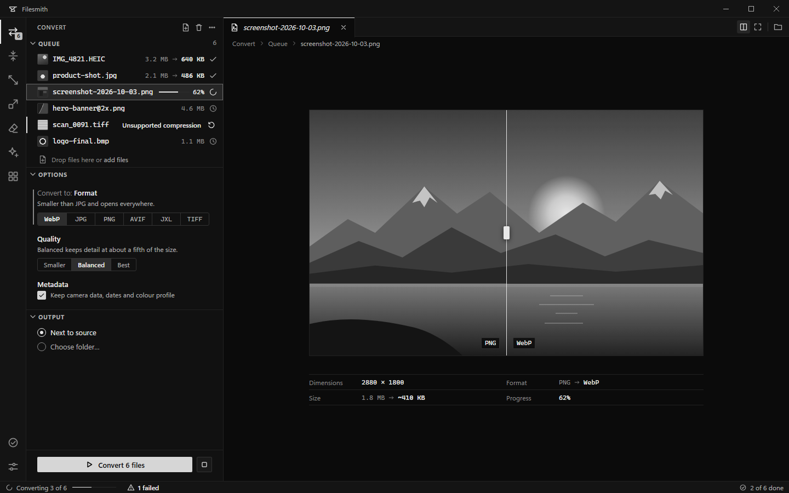
VS Code activity bar (2px edge bar active, badge), Explorer sidebar view with 22px collapsible section headers, empty editor as preview, status bar
The VS Code Explorer turned into a file tool. A narrow activity bar holds the verbs, and a 300px sidebar stacks collapsible QUEUE, OPTIONS and OUTPUT sections. The editor area previews the selected file. It is calm and familiar, and nothing floats.
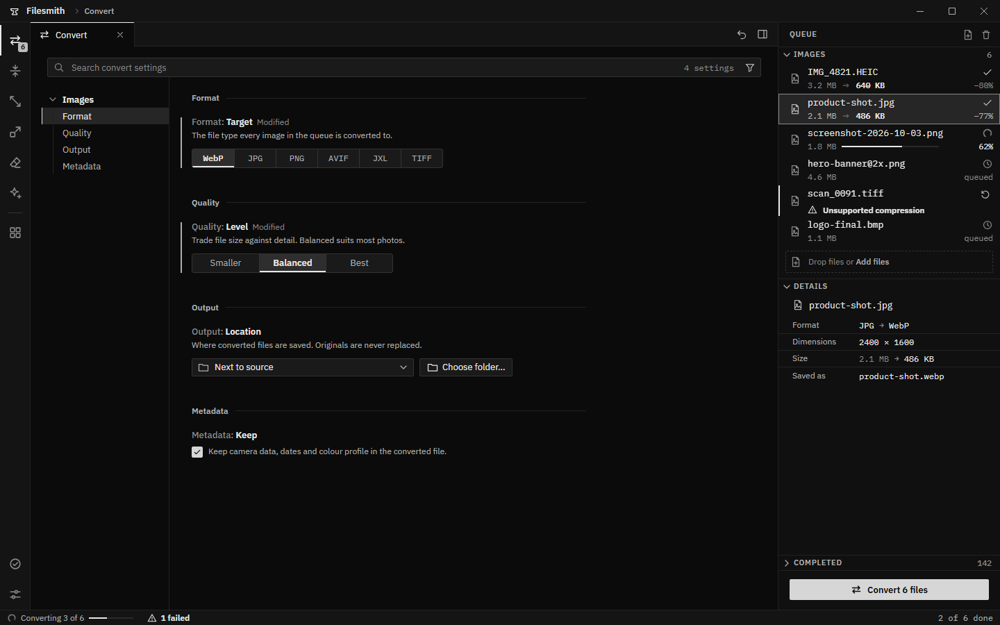
VS Code Settings editor (search + category tree + stacked rows, modified bar), VS Code secondary side bar, activity bar
Convert options read like VS Code's Settings UI: a search field, a category tree and stacked setting rows with a one-line description each. The queue lives in a secondary sidebar on the right. It is the literal 'IDE settings page' feel the owner asked for.
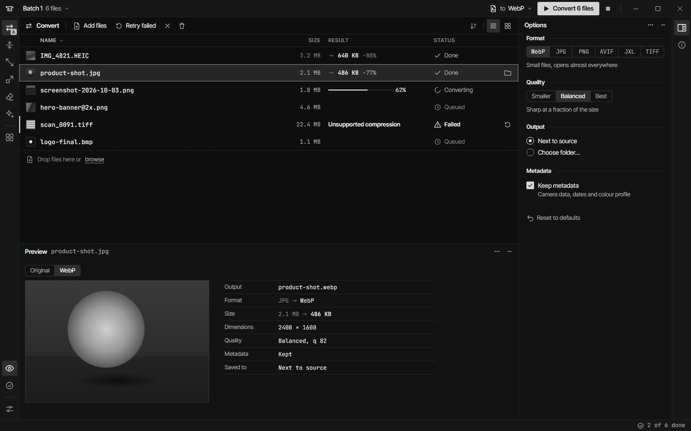
JetBrains New UI stripes (filled square active, separators), run widget in the title bar, tool windows (Options docked right), compact toolbar
JetBrains New UI framing: a tool window stripe on each edge, the queue as the main table, and a run widget in the title bar that holds the primary action, the way IntelliJ holds Run.
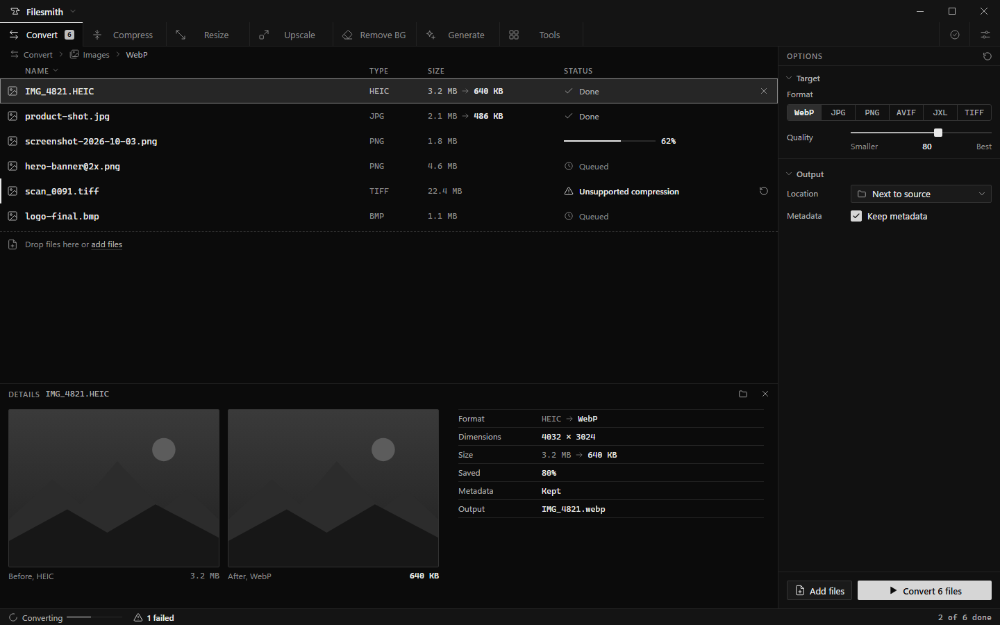
VS Code editor tabs (active top border, merges into content), breadcrumbs bar, JetBrains-style property inspector rows
The verbs are editor tabs across the top, each with an icon, and Convert is the active tab merging into the content. A breadcrumb names the target. A plain property inspector holds the options. There is no rail at all.
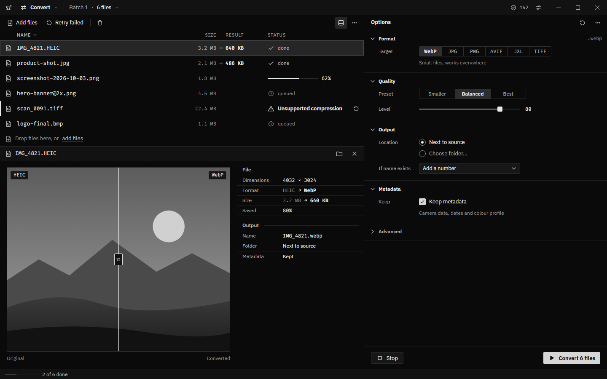
Zed / JetBrains title bar project picker, Zed flat list panes, inspector pane with disclosure groups
Zed and JetBrains style: no rail. The verb is picked from a 'Convert ▾' widget in the title bar, so the whole window belongs to a flat queue list and an inspector. The most uncluttered take.
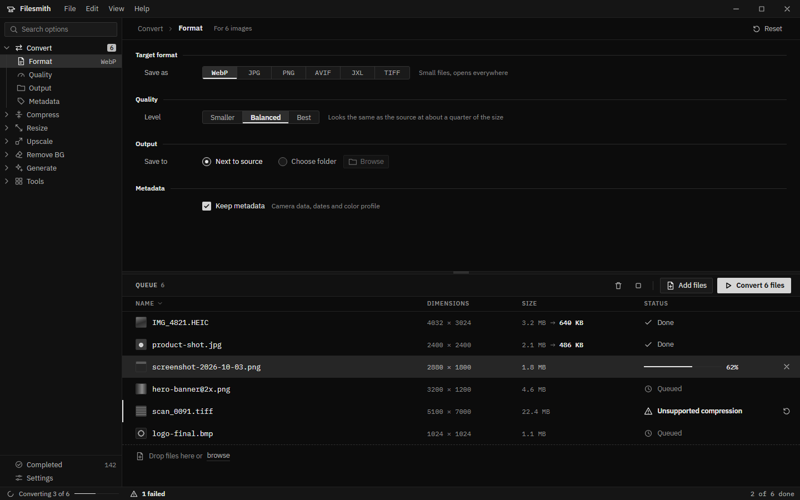
JetBrains Settings dialog (tree with search, breadcrumb header, titled-separator groups), horizontal split
The JetBrains Settings dialog as a whole app. A 220px tree lists the verbs, and each verb expands to its option pages (Convert › Format, Quality, Output). A breadcrumb header and titled separators replace cards, and the queue sits in a lower split.
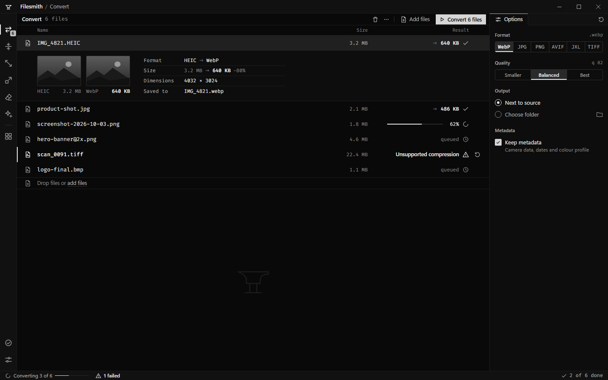
Zed (thin dock, crisp mono, hairline panes, slim pane headers), VS Code status bar
Zed minimalism with enough substance: a 40px icon column, one hairline split between queue and options, mono for data. Quiet, but every verb, row and button carries an icon.
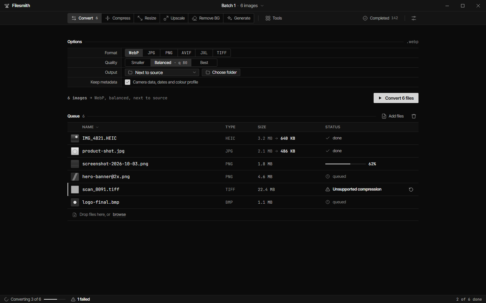
JetBrains Fleet top toolbar and centred workspace, property grid / key-value table, compact toolbar
JetBrains Fleet: a top toolbar instead of a rail, a centred workspace, and options as a crisp key-value property grid. Modern IDE-lite with air, still compact.
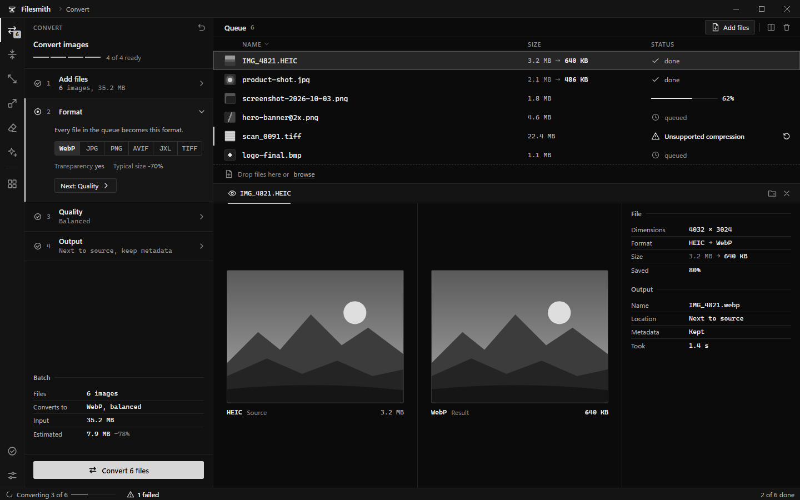
VS Code Welcome / Walkthrough step list (expanding step, check glyphs), activity bar, status bar
Borrowed from VS Code's Get Started walkthroughs: the left pane is a short numbered checklist (Add files, Format, Quality, Output), the active step expands inline to its control, finished steps show a check and their value. Setup becomes a guided menu, the queue fills the rest.
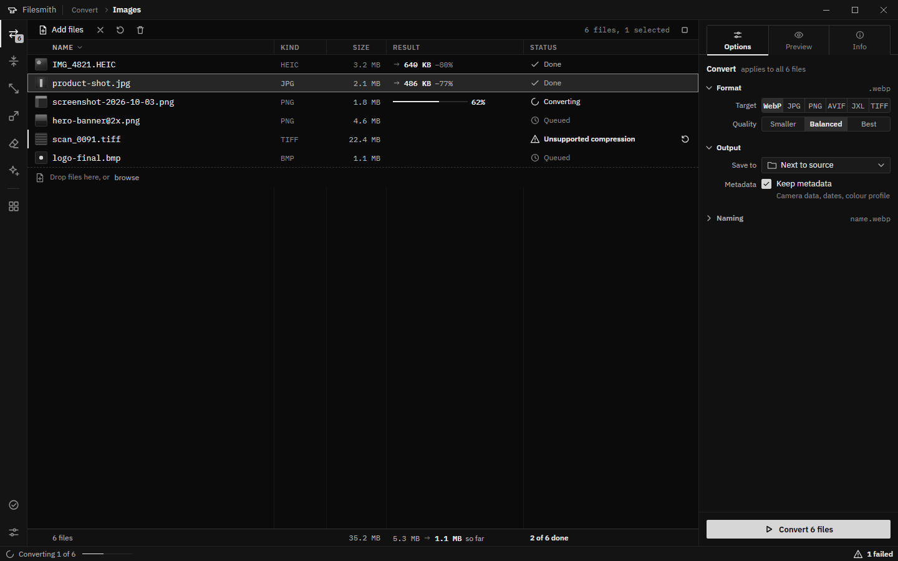
JetBrains / Explorer list with sortable column headers, Xcode inspector segmented icon tabs, property grid for Info
Explorer details view meets the Xcode inspector. The queue is a sortable column table, and the right inspector switches between Options, Preview and Info with icon segments. Power-user, but tidy.
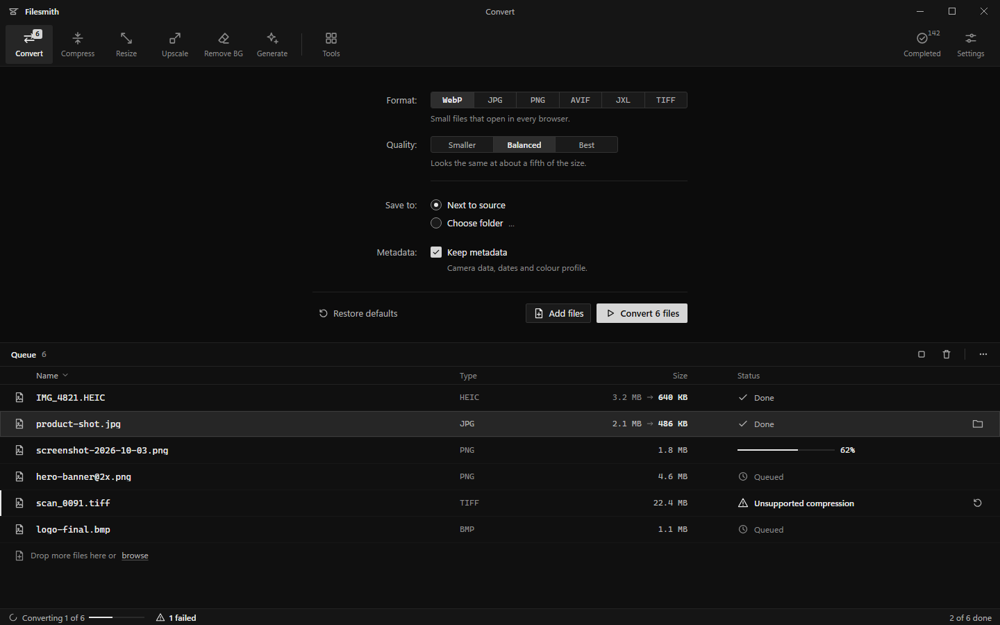
Nova / macOS preference-pane icon toolbar (square, monochrome), two-column right-aligned label forms, status bar
Panic Nova and classic preference panes: a top toolbar of square verb icons with small labels, and a two-column right-aligned form beside the queue. Reads like a well-made desktop app, not a web page.
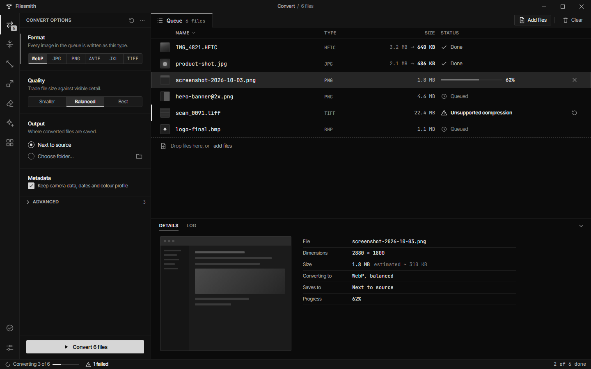
VS Code activity bar, a sidebar view titled like settings with stacked setting rows, editor area as details list, editor header actions
An activity bar plus a sidebar that IS the options: flush setting rows stacked in a 320px view, separated by hairlines, no cards, no row icons. The editor area is a large, airy details list of the queue.
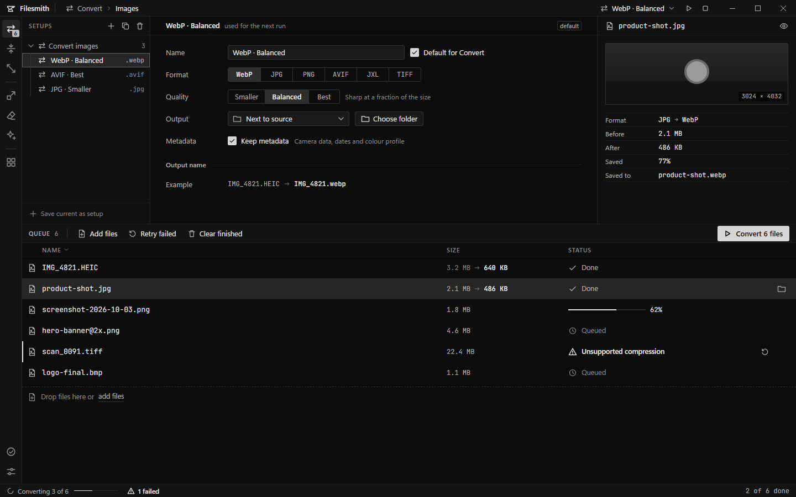
JetBrains Run/Debug Configurations dialog (config list + form), JetBrains stripe, compact toolbar
JetBrains Run/Debug Configurations as the options model: a short list of named targets on the left, the selected one's form on the right, and the queue below. Picking a setup feels like picking a run config.
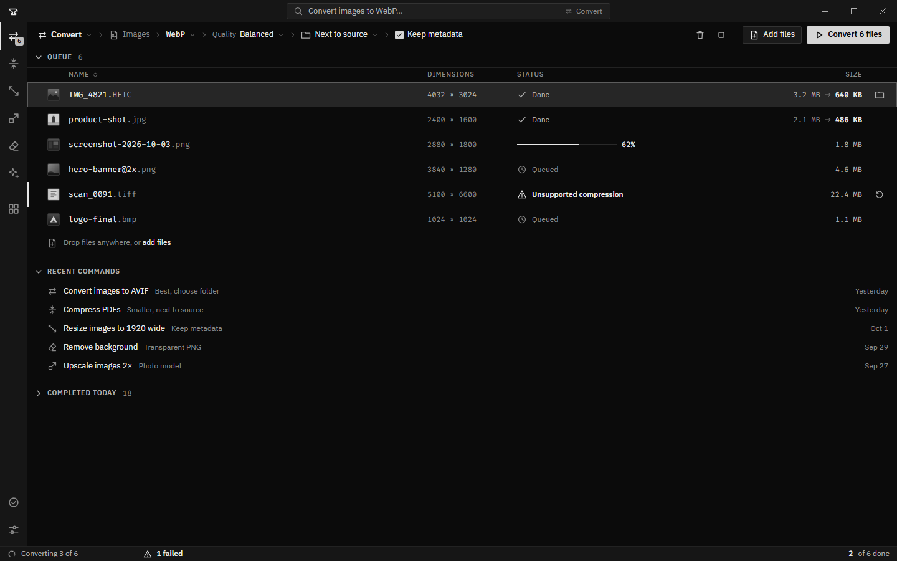
VS Code Command Center in the title bar, quick pick (closed trigger), breadcrumbs, status bar
The VS Code Command Center drives everything: a flat title-bar field searches verbs, files and settings. The verb and format show as a breadcrumb of dropdown triggers. Minimal chrome for keyboard users.
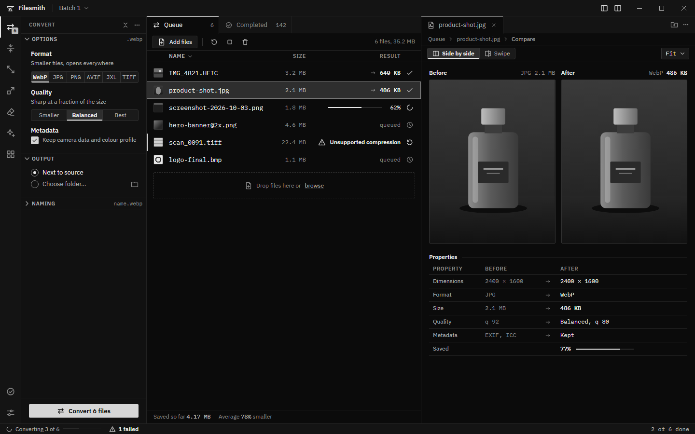
VS Code split editor groups with their own tabs, property grid, sidebar collapsible sections
Two editor groups side by side: the queue on the left, and a per-file before/after view on the right with a property grid. Options sit in a collapsible sidebar section. Best layout for checking results.
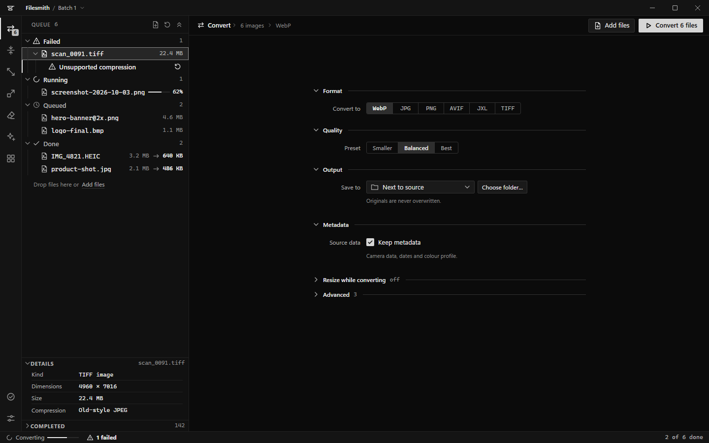
VS Code tree view with indent guides and focus outline, Problems view grouping, inspector disclosure groups
The queue is a tree whose top nodes are states (Failed, Running, Queued, Done) with counts, and indent guides lead to the files. Problems surface first, the way an IDE's Problems view does. Options sit as a centred form.
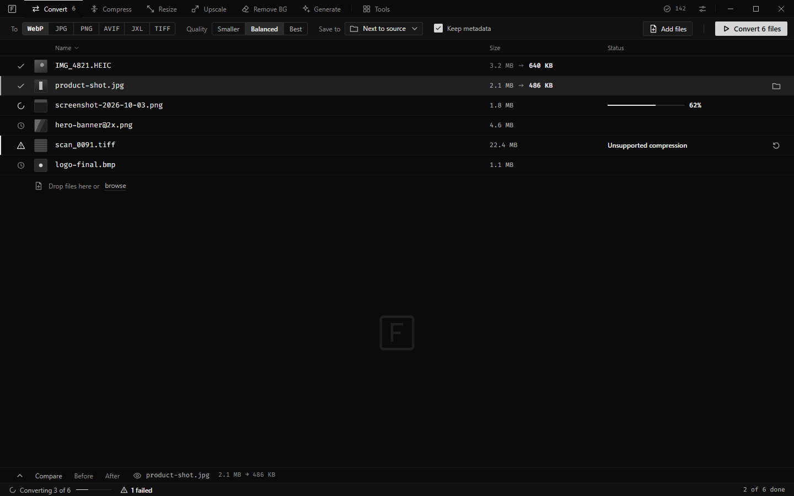
Sublime Text quiet chrome, tab top-line, single-line inline bar (Find panel), status bar
Sublime-quiet: almost no chrome, verb tabs with icon and label in the title bar, and every option squeezed into one inline bar above the queue, like Sublime's Find panel. The window is almost all files.
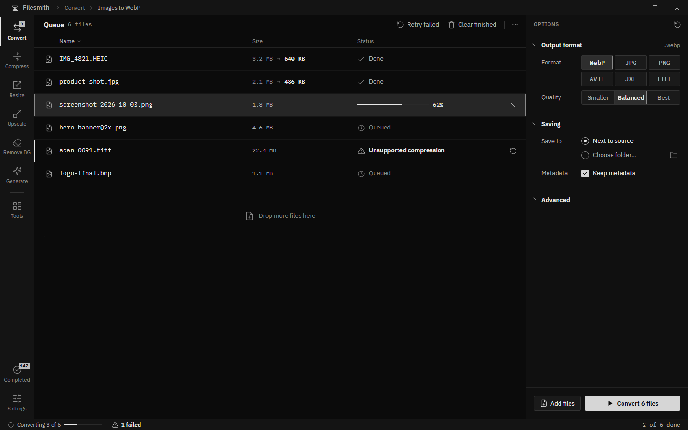
Labelled tool-window bar (Android Studio / Fleet), JetBrains property rows, status bar
An activity bar with a small label under every icon, like IDE tool-window names, so it is easy to navigate without tooltips, next to a compact property panel. Friendliest for non-developers.
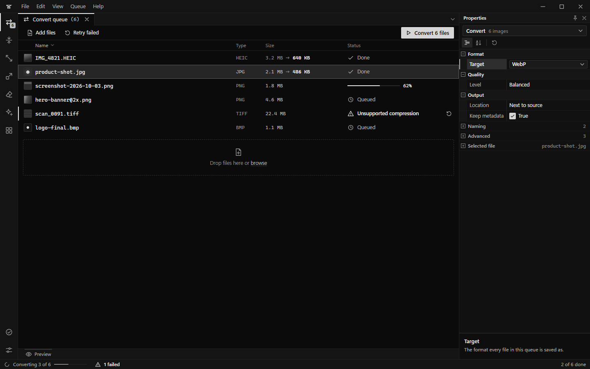
Visual Studio Properties window (categorised grid, description pane), tool window title bars with tab wells, document tab toolbar
Classic Visual Studio docking: the queue is a document tab, and a Properties tool window holds the options as a categorised property grid with a description box at the bottom that explains the focused setting. Familiar, structured, explanation only on demand.
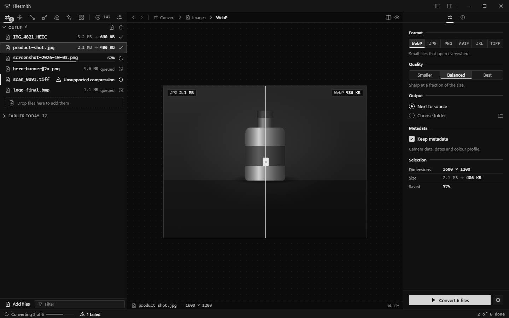
Xcode navigator selector bar and jump bar, JetBrains titled separators, VS Code status bar
Xcode's navigator selector bar: the verbs are a row of icons across the top of the left pane, which holds the queue below them. A jump bar names the target, and an inspector holds the options. A single-pane-per-job layout that is not any one IDE.